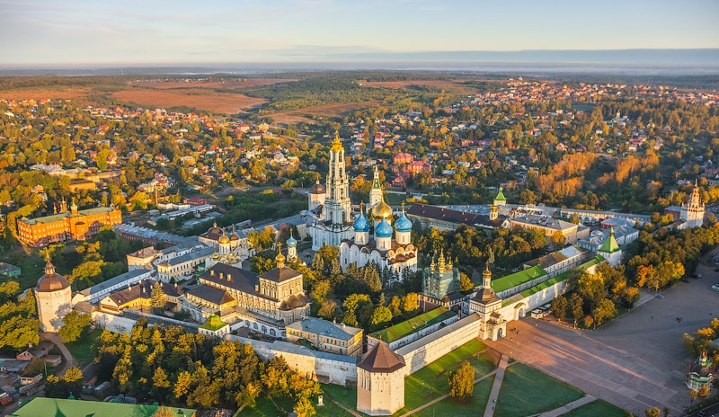
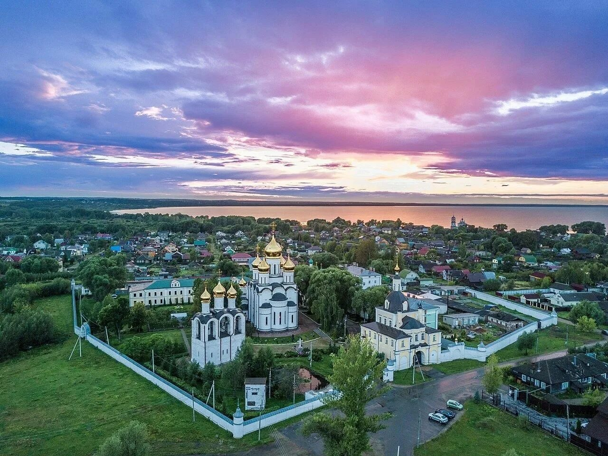
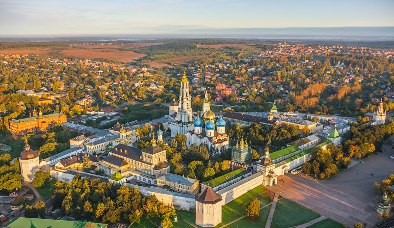
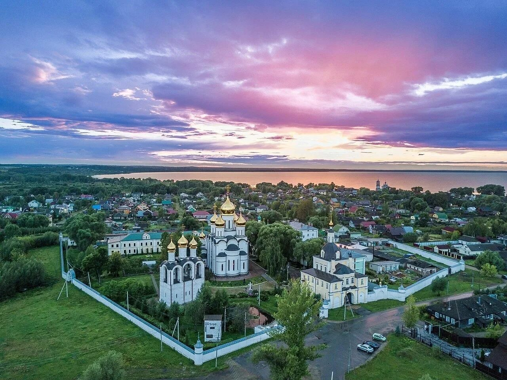
 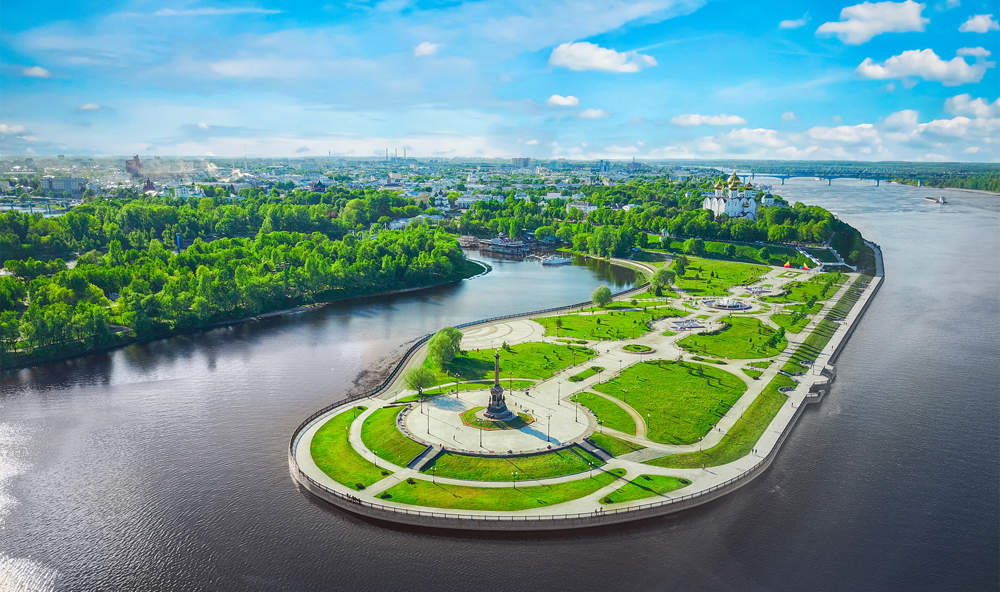
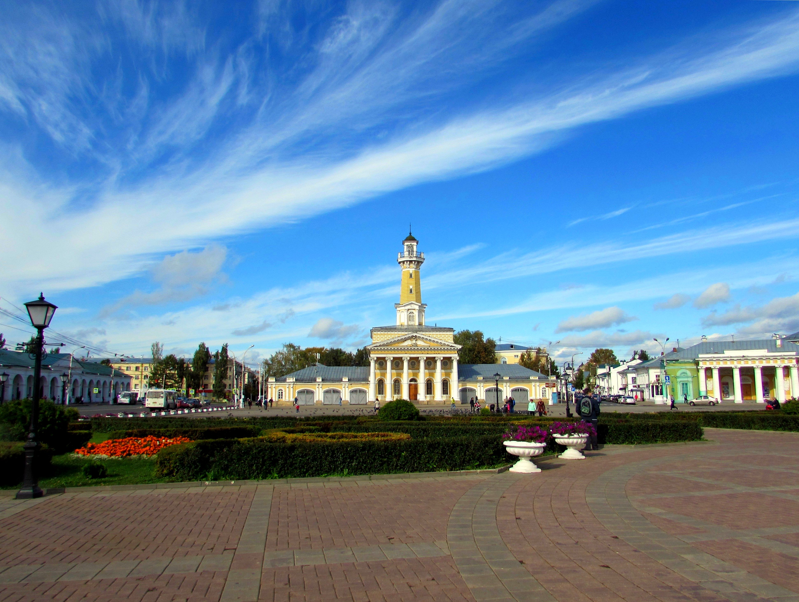
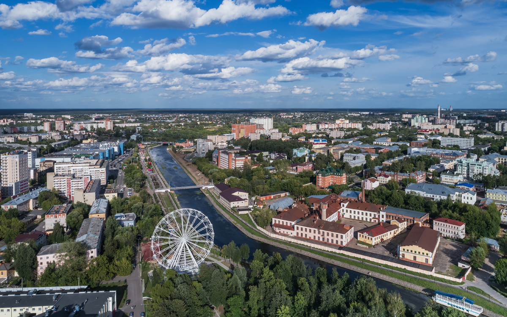
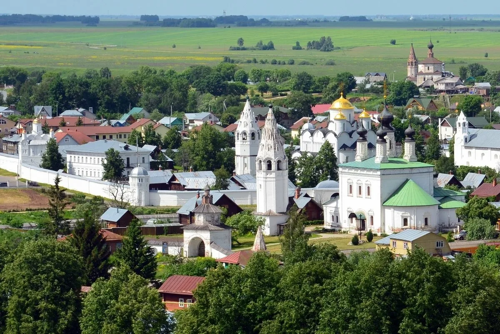
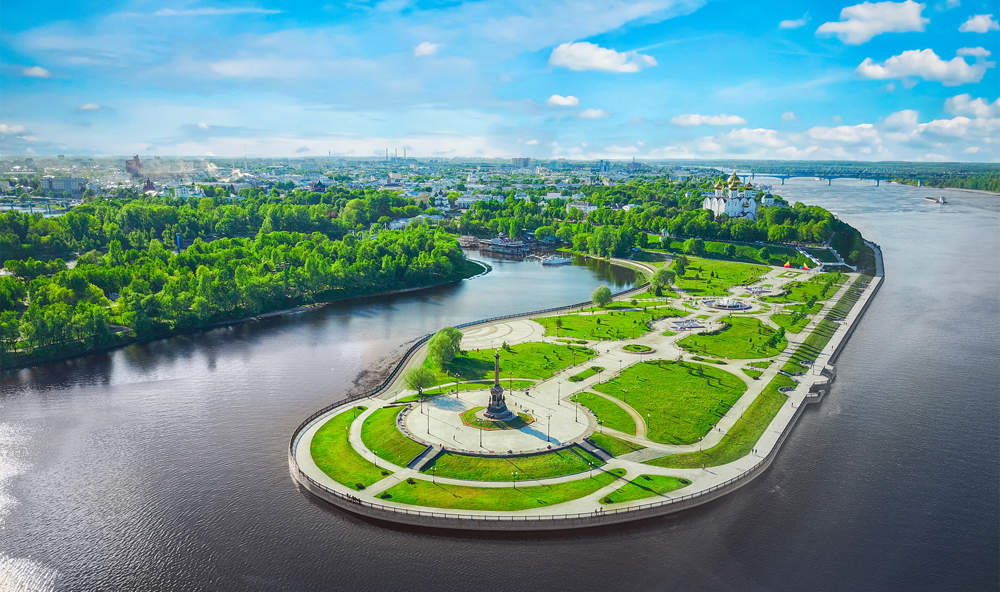
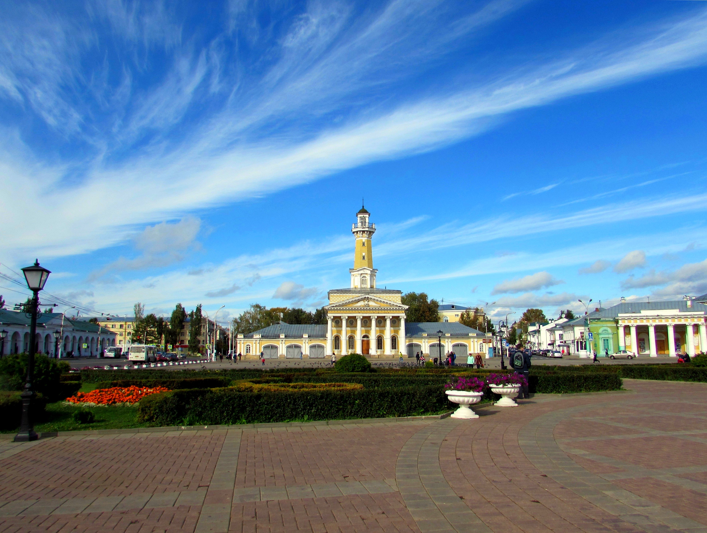
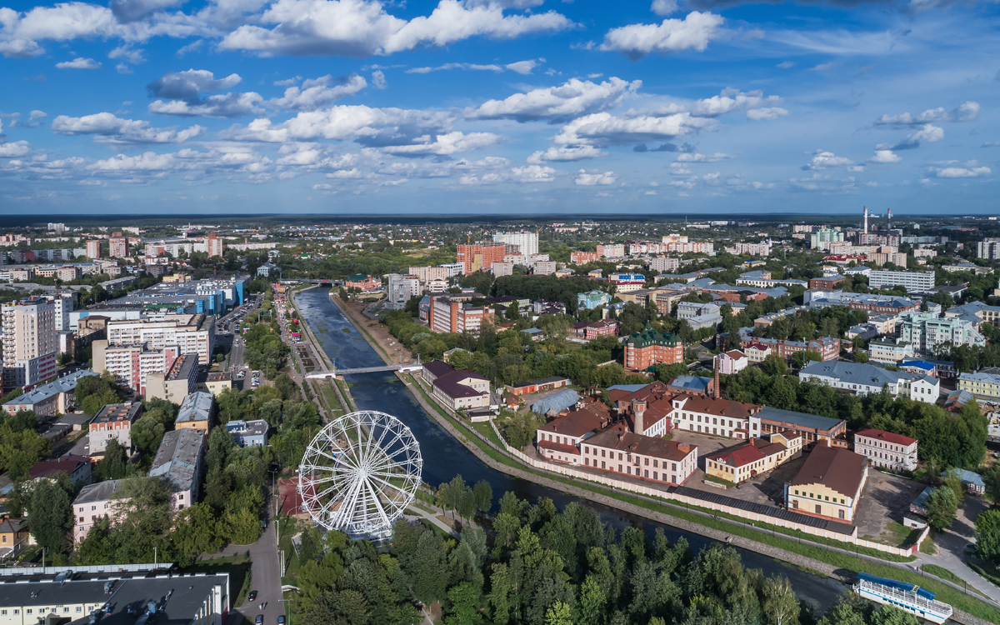
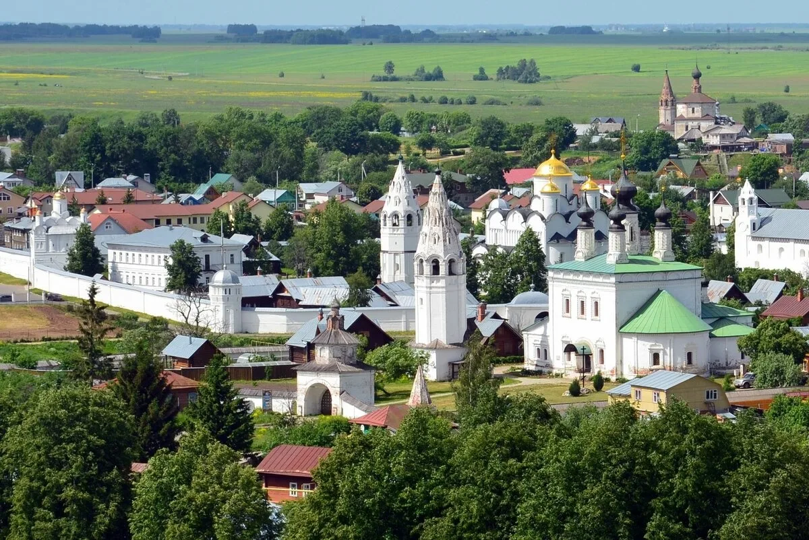

Владимир
Один из крупнейших туристических центров европейской части России. Входит в туристический маршрут «Золотое кольцо России».Расположен преимущественно на левом берегу реки Клязьмы, в 176 км к востоку от столицы России города Москвы. Транспортный узел на автомобильных («Волга» и «Восток») и железнодорожной (Нижегородский ход Транссиба) магистралях.
Подробнее